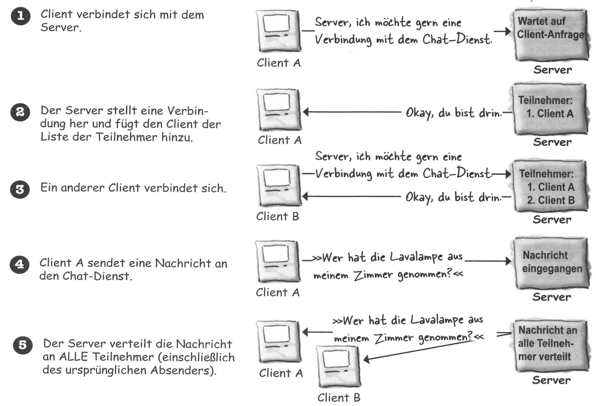
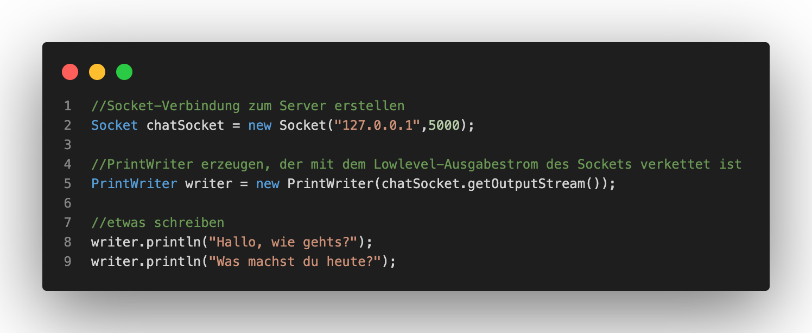
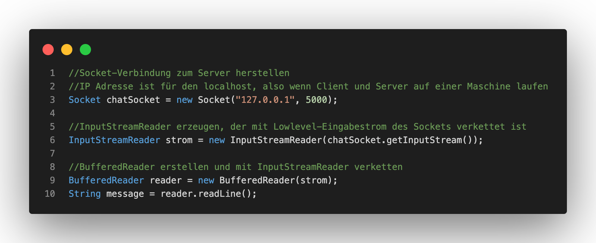
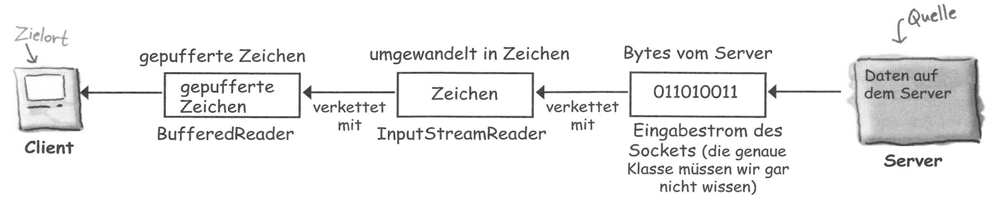
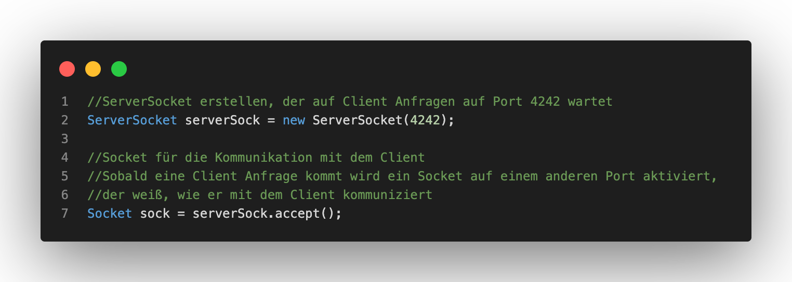

Netzwerkprogrammierung über Sockets
Das heutige Thema ist Netzwerkprogrammierung über Sockets und Threads. Dabei werden wir Java nutzen, um eine Verbindung zur Außenwelt aufbauen. Das Senden und Empfangen von Informationen und Daten ist eine einfahce Eingabe bzw. Ausgabe, in Verbindung mit einem Verbindungsstrom. Für diesen Zweck existieren die Klassen der java.net-Bibliothek. Diese kümmern sich in diesem Prozess um alle low-level Netzwerkdetails. Zunächst haben wir uns mit der Transmission Control Protocol (TCP) Socket Kommunikation beschäftigt. Im speziellen haben wir dabei ein CHatprogramm mit einem Server und mehreren Clients betrachtet. Eine Bedingung dabei ist, dass jeder Client den Server kennt und der Server alle Clients kennt.

Die obige Abbildung beschreibt wie Client und Server miteinander interagieren.
Client
Für das Funktionieren des Clients müssen drei Punkte gewährleistet werden. Punkt 1 ist dabei: Wie kann eine Verbindung zum Server aufgebaut werden? Punkt 2: Wie können Nachrichten an den Server gesendet werden? Punkt 3: Wie können Nachrichten vom Serer empfangen und gelesen werden? Umgangssprachlich lassen sich die drei Punkte folgendermaßen zusammenfassen: Es muss eine Verbidnung zwischen den CLients und dem Server bestehen, die es ermöglichen, dass Nachrichten von einem Client über den Server zu einem anderen Client weitergegeben werden können.
Punkt 1: Verbindung zum Server aufbauen
Die Netzwerkvebindung kann mithilfe eines Sockets hergestellt werden. Eine grundlegende Voraussetzung für die Verbidnung ist dabei, dass beide Softwareteile einander kennen müssen und den Kommunikationsweg kennen müssen. Diese benötigten Informationen liefern die IP-Adresse und die TCP-Portnummer. Dabei bestimmt die IP-Adresse die exakte Location des Empfängers, in desem Falle die des Servers, und die TCP-Portnummer beschreibt die logische Verbindung mit einer gabnz bestimmten Software des Servers. Wichtig ist dabei, auch für die spätere Anwendungsaufgabe, dass die Ports 0-1023 für verschiedene Dienste reserviert sind und deshalb für die Eigennutzung nicht verwednet werden sollten. Ein Beispiel dafür ist, dass der Internet-Webserver über den Port 80 läuft.
Ein Server besteht aus 65536 Ports und es bleiben dabei die registrierten Ports 1024-49151 für die Eigennutzung übrig. Die Portnummern beschreiben dabei mit welcher Anwendung ein Client eine Verbindung zum Sever erstellen möchte. Dies ist dabei sehr wichtig, da Anwendungen verschiedene Protokolle haben. Ein Beispiel dafür ist, dass ein Mailserver, ohne die Angabe eines Portes, einen HTTP-Request nicht anlysieren und verarbeiten könnte.
Punkt 2: Nachricht an Server senden
Sockets finden ihre Verwendung auch wenn Nachrichten an den Server gesendet werden sollen. Mihilfe der Klasse PrintWriter und den Methoden print() und println() können Informationen Line für Line ausgegeben werden.

Mithilfe des obigen Codes kann von dem Client über den PrintWriter, OutputStream und den Ausgabestream des Sockets eine Nachricht an das Chat-Programm des Server gesendet werden.
Punkt 3: Nachricht vom Server Empfangen & lesen
Durch Streams können Daten daraufhin von anderen Clients empfangen und gelesen werden. Dabei kommt zum Beispiel der BufferedReader zum Einsatz. Diesem ist es gleichgültig, ob der Verbindungsstrom mit einer Datei oder einem Socket verbunden ist:


Die Grafik oben zeigt dabei, dass ein Strom / Stream vom Server bis zum Client ensteht, der, durch diesen Stream, die Möglichkeit hat Daten und Informationen zu empfangen und lesen.
Server
Serverseitig wird um eine Server-Anwendung zu schreiben ein ServerSocket und ein Socket benötigt. Der ServerSocket wartet auf Client-Anfragen und der Socket ermöglicht in Verbindung dann die Kommunikation mit dem Client:

Übung 3
In der dritten Übung sollen wir die Kommunikation zwischen einem Client und einem Server programmieren, wie Oben in der Theorie erklärt. Die Klassen dazu heißen TippDesTagesClient und TippDesTagesServer. Die Quellcodes dazu sehen wie folgt aus:

Im Quellcode des Clients erzeugen wir in der Main Methode eine neue Client Instanz und starten die los()-Methode in dieser. Dort wird ein Socket erstellt, der den Port 4242 verwendet. Zudem werden ein InputStreamReader und BufferedReader erzeugt, die mit dem InputStream des Sockets (folgt) connected werden. Zusätzlich erzeugen wir eine endlose while-Schleife, dabei werden erhaltenen Nachrichten in der Konsole ausgegeben.

Zu dem Client benötigen wir das Gegenstück - den Server. Dabei erstellen wir analog zum Client in der Main Methode des Servers eine neue Instanz unseres Servers und starten ebenfalls die los()-Methode. Die los()-Methode erstellt einen neuen ServerSocket am Port 4242, der wie oben geschildert vom Client verwendet wird. Danach wechselt er in eine endlose while-Schleife, in der bei jeder Anfrage eines Clients dieser zunächst akzeptiert werden muss. Danach wird ein PrintWriter erstellt, dessen Output der OutputStream ist. Dabei wird eine zufällige Anzahl an Tipps des Tages versendet.
Wichtig ist bei der Ausführung darauf zu achten, dass der Server gestartet ist, damit der Client überhaupt die Möglichkeit erlangt eine Anfrage an den Port 4242 zu senden.